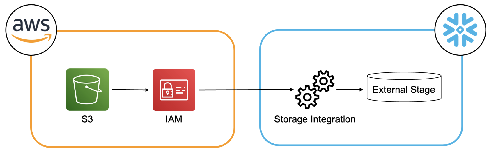
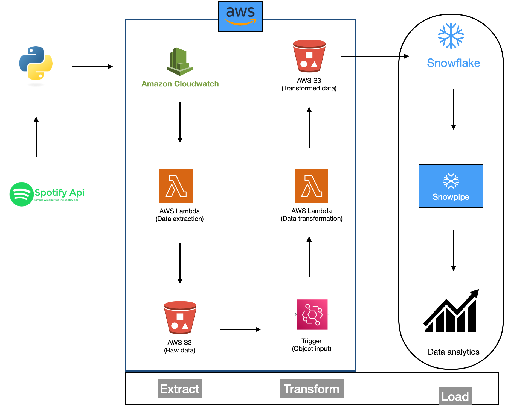
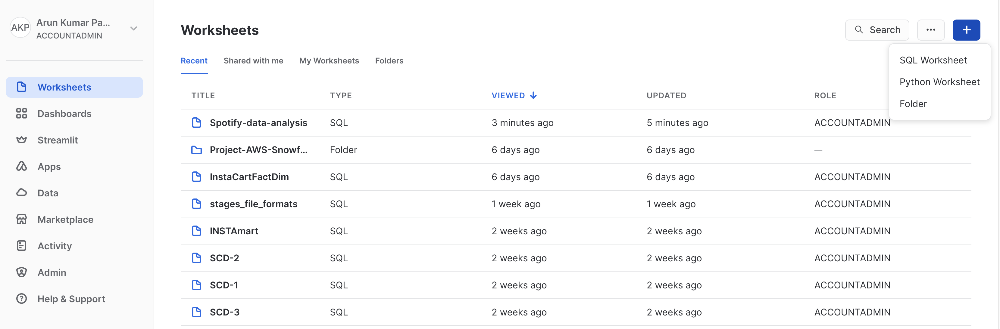
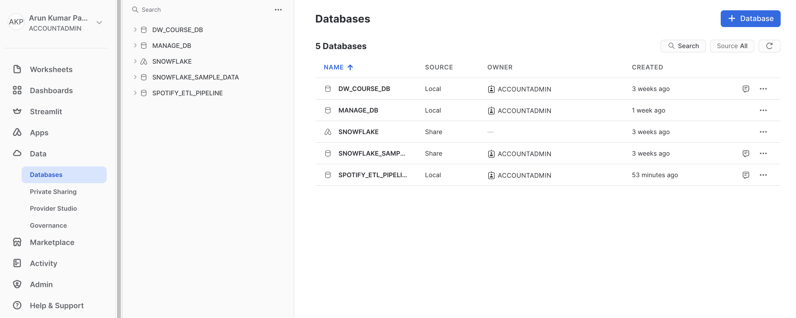
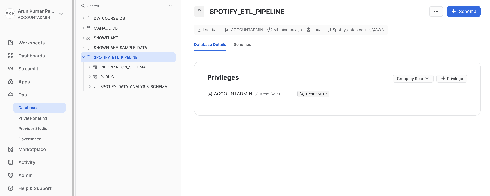
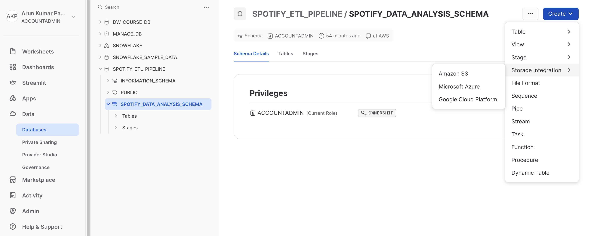

Building a Data Pipeline for Analyzing Top 50 Albums using Spotify API, AWS, and Snowflake
Introduction
In my recent data project, I leveraged the power of Snowflake, a cloud-based data warehousing platform, in combination with
the versatility of Amazon S3 (Simple Storage Service) to efficiently and seamlessly load data for analysis. The project
involved the extraction of data stored in an S3 bucket and its integration into Snowflake for further processing and analysis.
This integration of S3 with Snowflake allowed for a robust and flexible data pipeline that met the project's data processing needs.
Prerequisites
Before diving into the project, you'll need the following prerequisites:

Project overview
This project is an end-to-end ETL (Extract, Transform, Load) pipeline designed to automate the extraction of data from a Spotify playlist
and process it using various AWS services. The goal is to showcase proficiency in data engineering and AWS, with a focus on data extraction,
transformation, and automated processing. I have successfully completed the Spotify ETL pipeline project on AWS, and here's an overview
of the key steps:
-
Data Source and S3 Integration: The project began by sourcing data from a spotify API of globally famous top 50 songs
and storing it in an Amazon S3 bucket. Amazon S3 provided an ideal repository for the data due to its scalability, durability,
and cost-effectiveness. This cloud-based storage solution ensured that the data was easily accessible and highly available for the subsequent
stages of the project.
-
Setting Up Snowflake External Stages: To enable the efficient loading of data from the S3 bucket
into Snowflake, I created Snowflake external stages. These stages act as bridges between the cloud storage and Snowflake, allowing the seamless
transfer of data. By configuring the external stages to point to the specific location of the data in the S3 bucket, I established a direct
connection between the two platforms. This configuration also included defining the necessary access credentials for secure data transfer.
-
Data Loading with Snowpipe: One of the standout features of the project was the
utilization of Snowpipe, a powerful Snowflake feature designed for continuous, automated data loading. With Snowpipe, new data added to the S3
bucket was automatically detected and ingested into Snowflake. This real-time data ingestion mechanism reduced manual intervention and minimized
the latency between data arrival and availability for analysis. Snowpipe's event-driven model ensured that data was always up-to-date in
Snowflake.
Benefits of the S3 and Snowflake Integration
The integration of Amazon S3 with Snowflake delivered numerous advantages. It provided a scalable and cost-effective solution for data storage, allowing the
project to grow seamlessly with the increasing volume of data. The use of Snowflake's data warehousing capabilities ensured efficient data
processing and analysis. Additionally, the automated data loading through Snowpipe enhanced operational efficiency and maintained data accuracy.
Project Architecture

Project Setup
Snowflake resources
Snowflake Edition:
Signup Process:
- Go to the Snowflake website and click on "Get Free Trial."
- Follow the on-screen instructions to set up your Snowflake account.
- Note any specific considerations or tips during the signup process.
- Once your account is created, you can access the Snowflake web interface by logging in.
AWS Resources
Key Components
- AWS s3 data: I assume that data is already extracted, trasnformed and then loaded to the AWS s3 bucket, in folders: album_data, artist_data
and songs_data.
- Automation with AWS Lambda: AWS Lambda functions were used to automate data processing tasks. Triggers were set up to initiate these processes when new data was added to the S3 buckets.
- Data Loading to Snowflake from aws s3 bucket: Next we would do the creation of snowpipes.
-
Access Your Snowflake Account: Log in to your Snowflake account using your credentials.
-
Create a Workspace: Click on the "Workspaces" tab and create a new workspace named "Spotify-data-analysis."

-
Create a Database: Within your workspace, create a new database named "SPOTIFY_ETL_PIPELINE."

-
Define Tables and Schema: Create the necessary tables within your database, defining the schema ('SPOTIFY_DATA_ANALYSIS_SCHEMA') for your data. This schema should match
the structure of your data files in the S3 bucket.

-
Set Up AWS Integration:
Setting up the AWS integration allows Snowflake to access your AWS S3 bucket and pull data into your Snowflake tables.
-
Configure AWS Integration: It is important to note that an ACCOUNTADMIN is required for this task. A storage integration in
Snowflake is an object that stores a generated identity for the external cloud storage.
Within the Snowflake account, navigate to "Account" and then "Security Integration." Click on "Set Up Third-Party Integration." This can also be done through following
query:
create storage integration "integration_name"
type = external_stage
storage_provider = s3
storage_aws_role_arn = '"role ARN"'
enabled = true
storage_allowed_locations = ('s3://bucket_name/');
-
Choose AWS as the Cloud Provider: Select AWS as your cloud provider. You may be prompted to enter AWS access and secret keys for authentication.
-
Define the Integration Name Create a name for your integration, such as "Spotify-AWS-Integration."
-
Define a Role ARN: Specify the Amazon Resource Name (ARN) for the role that has permissions to access your S3 bucket. This role should have read access to the bucket where your data is stored.
-
Configure External Stage: Set up an external stage that points to your AWS S3 bucket. Provide the bucket name and any other required configuration settings.
-
Validate and Save: Review the integration details to ensure they are correct. Click "Finish" to save the integration.

Create a Trust Relationship for the Storage Integration: Afterward, we can execute the following query to retrieve information about the storage integration:
desc integration "integration_name";
Create an External Stage: With the above setup, we can now create an external stage using the following SQL statement:
create stage "stage_name"
storage_integration = "integration_name"
url = 's3:// "bucket_name"/';
We can check all the available files at s3 bucket using:
List @stage_name;
-
Load Data from S3 to Snowflake: Now that your integration is set up, you can use Snowflake's COPY INTO command to load data from your S3 bucket into Snowflake tables. Ensure that you have the necessary permissions to perform this operation.
-
Data Analysis: With your data successfully loaded into Snowflake, you can now perform data analysis using SQL queries and other tools within Snowflake.
Project Results
Following visualizations were created to illustrate key findings and insights from the data analysis.
Challenges Faced
Future Improvements